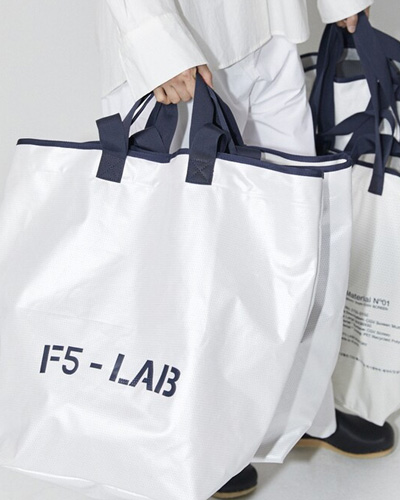
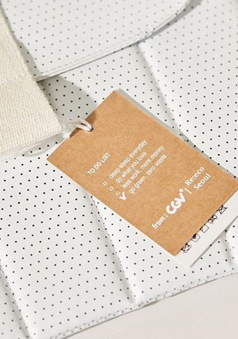
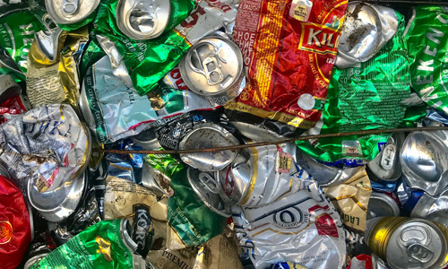
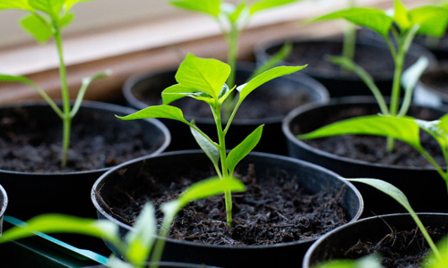

HOME > 지속 가능 경영 > 환경 경영
ESG Environment
CULTURE GLOBAL ONLYONEEnvironment Performance
ESG Management PerformanceCJ CGV는 지구환경을 보호하는 사업장이 되기 위해서
다양한 환경 경영 활동을 추진합니다.
Environment
지구 환경을 보호하는 사업장폐기물 저감
"CJ CGV는 극장에서 발생하는 폐기물을 최소화하고 재활용률을 높이기 위해 노력합니다."

- 운영 장비 재활용
- CJ CGV는 폐기물을 최소화하고 자원 재활용을 실천하기위해 극장 폐점 시 발생하는 운영 장비를 재사용, 재활용하고 있습니다. 교체가 필요한 노후 장비를 제외한 자산성 장비는 타 사업장으로 이동하여 재사용하거나 부품 등으로 재활용하고 있습니다. 또한 F&B장비 중 협력사에서 임대한 장비는 전량 반납하며 폐기 장비의 발생을 최소화하고 있습니다.
- 재활용이 용이한 팝콘 용기와 다회용 컵 사용
- CJ CGV는 2021년 하반기부터 극장 내 팝콘 팩토리에서 발생하는 폐기물 저감과 자원 재활용을 위해 매점 제품 패키지를 변경하였습니다.
CJ CGV는 10개 극장 팝콘 용기 소재의 코팅과 인쇄 면적을 줄여 재활용이 용이한 소재로 제공하고 있습니다. (2022년 1월~)
CJ CGV는 5개 극장에 다회용 컵 사용 서비스를 시범 도입 하였습니다. 고객이 탄산 음료 구매 시 다회용 컵 선택이 가능하며 사용한 컵은 수거함에 반납하면서 직접 친환경 활동에 참여합니다. (2021년 7월~)
지속 가능한 자원 사용
"CJ CGV는 지속 가능한 원자재와 재생 제품 사용을 위해 노력합니다."
-
- NON-GMO 옥수수 팝콘
- CJ CGV의 팝콘은 100% NON GMO 옥수수를 사용하여 제조하고 있습니다.
-
- FSC 인증 지류와 목재 사용
- CJ CGV는 고객 제공 영수증과 지류 티켓을 모두 FSC 인증 지류로 사용하고 있으며, 일부 전동 리클라이너 의자는 FSC 인증 목재를 사용하고 있습니다.
-

- 업사이클링 굿즈 개발
- CJ CGV는 극장 리뉴얼, 오염 등으로 버려지는 스크린을 리틀백, 멀티백, 매트, 파우치 등으로 재탄생시키는 새활용 프로세스를 구축하고 있습니다.
기후 변화 대응
"CJ CGV는 에너지 효율화를 통해 온실가스 배출을 줄이기 위해 노력합니다."
-
- 온실가스 인벤토리 구축
- CJ CGV는 ‘온실가스 목표관리제’ 관리업체로 지정되어 온실가스 인벤토리를 구축했습니다. (2016년~)
- 본사 포함 전국 120여 곳의 직영 사업장에서 발생하는 온실 가스량에 대한 데이터를 취합/관리하며 온실가스 저감을 위해 노력하고 있습니다.
- 온실가스 배출 허용량 대비 2020년에는 36,885(tCO2-eq), 2021년에는 31,767(tCO2-eq), 2022년에는 9,851(tCO2-eq) 초과달성 하는 등 지속적으로 온실가스 배출량을 감축해 나가고 있습니다.
단위 : tCO2-eq온실가스 배출량 2020년 2021년 2022년 Scope 1 6,145.5 7,184.4 7,712.3 Scope 2 52,690.9 53,561.9 63,680.3 *2022년 온실가스 배출계수 변경 시 온실가스 배출량 및 배출집약도는 향후 변경 가능
-
- 주요 장비 에너지 효율화
- CJ CGV는 한국에너지공단과 MOU를 체결하여 에너지 진단 활동을 하면서 LED조명 교체, 대기전력 차단기기 설치로 전력 사용량을 효율적으로 관리하고 있습니다.
- 전사 차원으로 전기 절감 캠페인 (공조기 및 키오스크 운영체계 변경)을 시행하였으며 일부 입점 건물에는 태양광 발전 시설을 이용하는 등 에너지 절약 및 효율적 사용을 위해 노력합니다.
단위 : TJ에너지 사용량 연료 사용량 전기 사용량 스팀 사용량 2020년 120.6 1,066.9 26.2 2021년 141.3 1,096.5 30.8 2022년 151.7 1,304.5 35.6
친환경 사회공헌 활동
"CJ CGV는 지역사회 환경 영향 저감과 생태 환경 보전을 위한 다양한 활동을 진행합니다."
-

- 임직원 친환경 캠페인
- CJ CGV는 지난 2022년 10월 한달 간 임직원들이 일상에서 참여할 수 있는 친환경 캠페인을 진행했습니다. 다회용기 사용, 쓰레기 분리배출 및 재활용 실천, 대중교통 이용, 저탄소 및 유기농 인증 제품 구매, 잔반 줄이기 등 탄소배출을 줄이기 위한 다양한 활동에 참여했습니다.
-

- 집씨통 봉사활동
- CJ CGV는 생태 환경 보존을 위해 임직원들과 ‘집씨통(집에서 씨앗 키우는 통나무)’ 봉사활동을 진행했습니다. ‘집씨통’ 봉사활동은 흙과 도토리 씨앗을 약 100일간 묘목으로 길러 다시 공원으로 보내는 생물다양성 보전활동입니다.